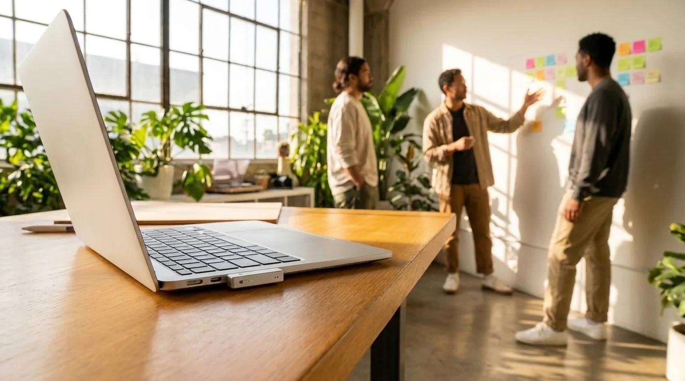
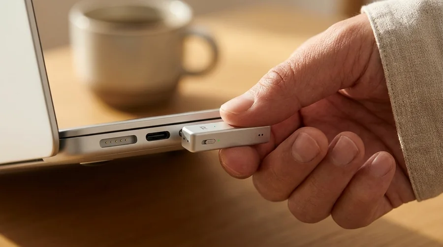

Rutta Bar
The microphone that lives on your Mac
A slim aluminum mic that plugs into the side of your MacBook Air. Talk naturally, slide to mute, and get every conversation back as a clear note.
Rutta Bar
A slim aluminum mic that plugs into the side of your MacBook Air. Talk naturally, slide to mute, and get every conversation back as a clear note.
Four finishes
Silver, Sky Blue, Starlight and Midnight, each in anodized aluminum. Pick one to see it.
Plug Rutta Bar into your Mac and just talk. Afterwards, the Rutta app turns what was said into a transcript, the decisions you made and answers you can search.

Tue 10:02 · Weekly design sync
MayaWhich prototype are we testing on Friday?
LeoThe silver one. I’ll send the new build by Thursday noon.
MayaPerfect. Let’s go with silver.
Maya and Leo agreed to put the silver prototype in front of five people on Friday. Leo will send the updated build by Thursday noon.
Reviewed note
DecisionTest the silver prototype on Friday.
Leo · Thu 12:00Send the updated build.
Maya · WedBook five participants.
Reviewed by Maya and Leo
ShareWhat did we decide about Friday?
Test the silver prototype. Leo is sending the build by Thursday noon.
Related moment

The Rutta app is a software concept. Conversation and people are fictional.
“The USB-C plug is the whole connection. Nothing runs across the desk, and nothing gets left behind in a bag.”
Five everyday moments, kept by Rutta Bar.
 Design review
Design review
Both voices reach the side of the Mac across a café table. The decision is written down before the coffee’s finished.
No recorder sitting between you. The light on top tells everyone at the table when sound is going to the Mac.
Two friends, two mugs, one laptop. Plug it in and there’s nothing else to press.

StandupEveryone talks, nobody takes minutes. Who owns what is clear before the laptop closes.
 Tutoring
Tutoring
The best questions come right at the end. Rutta Bar is already plugged in when they do.
Concept scenes · Fictional people
26 mm of aluminum on the side of your Mac. Here’s how it fits, how it mutes and what it looks like up close.

A metal switch sits on the outer edge, right under your fingertip. The light next to the R on top shows when audio is going to your Mac.

The light on top breathes green while the microphone is ready.
Interactive demo. Click the switch or drag it left to mute and right to unmute.
Drag to turn Rutta Bar around, or choose a detail.

Three people we keep in mind while we design. They’re fictional, so these aren’t customer reviews.

Rutta BarFictional persona
“I’d want it plugged in when the sketches come out, so I’m not scribbling while Leo talks.”
Maya runs two design reviews a week, usually away from the office. She’d use the reviewed note to send decisions to engineering the same afternoon.

Rutta BarFictional persona
“In interviews my eyes should be on the participant, not a recorder. A light they can see is an honest signal that we’re recording.”
Dana interviews six to eight participants a week. Being able to point at the light when she asks for consent matters as much as the audio does.


Rutta BarFictional persona
“Students ask their best questions right at the end. I’d want those kept without setting anything up.”
Tomás tutors in the library between lectures. He’d share the “next session” note with each student so they arrive knowing where to start.

Measured against a 13-inch MacBook Air (M4).
Clearance around neighboring plugs and the display hinge still needs testing on a physical sample.
The built-in USB-C plug carries power from the Mac and audio back to it. There’s no battery to charge. It uses the port closest to the palm rest, leaving the other USB-C port and MagSafe free.
The shell and switch cap are designed in anodized aluminum. The four render studies are Silver, Sky Blue, Starlight and Midnight. Final colors will be matched against physical samples.
Rutta Bar is an industrial design concept. This page shows the intended fit, controls and indicator behavior. Pickup from different seats, keyboard noise and real-world fit still need prototype tests.
Every angle of the hardware, the full spec sheet and a short film of the box.